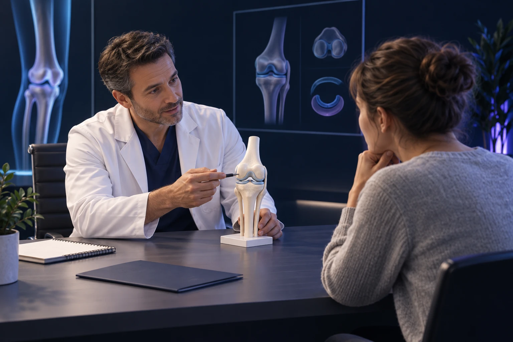

Première consultation chez un chirurgien orthopédiste : que préparer et quelles questions poser ?

Consulter un chirurgien orthopédiste ne signifie pas qu’une opération sera nécessaire. Le rendez-vous sert d’abord à comprendre votre problème, à évaluer son retentissement et à comparer les options. Quelques documents et une description précise de vos difficultés permettent de consacrer davantage de temps aux décisions qui vous concernent.
Quel est l’objectif du premier rendez-vous ?
L’orthopédie concerne les os, les articulations, les muscles, les tendons et les ligaments. Une consultation peut porter sur une douleur, une perte de mobilité, une instabilité ou les suites d’un traumatisme. Le chirurgien met en relation votre histoire, l’examen et les éventuelles images.
Vous pouvez voir ce rendez-vous comme la préparation d’une carte de route. Avant de choisir un traitement, il faut identifier le point de départ, le problème à résoudre et l’objectif qui compte pour vous. Le meilleur parcours n’est pas nécessairement celui qui comporte une intervention.
Il est possible que la première consultation débouche sur une rééducation, un examen complémentaire, un traitement médical, une surveillance ou une discussion chirurgicale. Demandez quel est l’objectif de la prochaine étape et comment son résultat sera évalué.
Comment raconter votre douleur de façon utile ?
Commencez par le problème principal : où avez-vous mal et qu’est-ce qui est devenu difficile ? Précisez si les symptômes ont commencé après un accident ou progressivement. Une chronologie simple suffit ; il n’est pas nécessaire de mémoriser chaque journée depuis le début.
Décrivez ensuite les situations qui déclenchent la gêne. Marcher dix minutes, descendre un étage, rester assis ou enfiler une chaussure sont des exemples plus précis que « j’ai mal quand je bouge ». Signalez les gonflements, les blocages, les dérobements ou les sensations inhabituelles.
Pour une douleur du genou, ces caractéristiques contribuent à orienter le diagnostic et le choix des examens. Elles aident aussi à distinguer des symptômes que l’on décrit parfois avec le même mot, comme un blocage réel et une limitation liée à la douleur. Assurance Maladie, préparer le récit d’une douleur du genou.
Si vous avez du mal à vous souvenir des circonstances, notez quelques observations avant le rendez-vous. Une courte liste lisible est souvent plus utile qu’un dossier très volumineux dont les documents ne sont pas classés.
Quels documents faut-il apporter ?
Rassemblez les comptes rendus utiles et les images des examens déjà réalisés. Vérifiez, si vous disposez d’un accès numérique, que vous pouvez retrouver les informations nécessaires pour les consulter. Un compte rendu décrit l’examen, mais ne remplace pas toujours l’analyse des images.
Apportez la liste de vos traitements et de vos allergies. Mentionnez les interventions antérieures, en particulier sur la région concernée. Si vous avez une prothèse, les documents identifiant l’implant et le compte rendu opératoire peuvent être utiles lorsqu’ils sont disponibles.
Pour une douleur du pied, vos chaussures habituelles et vos semelles apportent parfois des informations concrètes. Pour une gêne sportive, une description du programme d’entraînement peut aider. Il n’est pas nécessaire de faire réaliser de nouveaux examens de votre propre initiative avant la consultation.
Comment expliquer les traitements déjà essayés ?
Indiquez ce qui a été proposé, pendant combien de temps et avec quel effet. Une rééducation a-t-elle amélioré la force, la douleur ou la marche ? Une infiltration a-t-elle soulagé quelques jours, plusieurs semaines ou pas du tout ? Un médicament a-t-il provoqué un effet indésirable ?
Cette précision évite de considérer comme identiques des traitements très différents. Elle permet aussi de comprendre si une option a été suffisamment essayée, si elle doit être ajustée ou si une autre stratégie mérite d’être discutée.
Signalez les difficultés pratiques. Un programme interrompu parce que les déplacements étaient impossibles n’a pas la même signification qu’un programme bien suivi sans bénéfice. Vous pouvez en parler sans chercher à présenter un parcours « parfait ».
Quelles questions poser sur les options ?
Demandez ce que l’examen permet de conclure, ce qui reste incertain et quelles possibilités existent. Pour chaque option, cherchez à comprendre le bénéfice attendu, les risques et les contraintes. Vous pouvez aussi demander ce qui est susceptible de se passer si vous attendez.
La décision partagée associe les informations médicales à vos priorités et à vos préférences. Elle ne vous demande pas de choisir seul une technique que vous ne connaissez pas. Elle permet de construire une décision comprise et acceptée avec le professionnel. HAS, décider ensemble.
Si une explication reste abstraite, demandez un dessin ou un exemple. Vous pouvez faire reformuler un terme et prendre quelques notes. Une question importante ne devient pas inutile parce qu’elle vous semble simple. HAS, parler avec son médecin.
Si une opération est évoquée, que faut-il clarifier ?
Demandez quel problème le geste cherche précisément à traiter. Une opération peut viser la douleur, la stabilité, la mobilité ou plusieurs objectifs, sans garantir leur résolution complète. Les limites doivent être aussi compréhensibles que les bénéfices espérés.
Abordez la récupération : aides à la marche, soins, rééducation, transports et reprise du travail. Décrivez votre poste réel, votre logement et l’aide disponible. Une durée moyenne d’arrêt ne répond pas toujours à la situation d’une personne qui porte des charges ou travaille sur un terrain irrégulier.
Vous pouvez avoir besoin de temps pour réfléchir ou pour organiser votre quotidien. Si le contexte ne nécessite pas une décision urgente, demandez comment reprendre contact après le rendez-vous. Le fait d’évoquer une chirurgie ne vous engage pas automatiquement à la programmer.
Que devez-vous comprendre en repartant ?
Essayez de résumer le plan en quelques phrases : le problème identifié, la prochaine étape, les consignes à suivre et le moment du contrôle. Vérifiez à qui vous adresser si un symptôme s’aggrave ou si une question apparaît après la consultation.
Si vous venez accompagné, choisissez une personne avec laquelle vous êtes à l’aise pour parler de votre santé. Elle peut aider à retenir les informations, tout en vous laissant exprimer vos propres attentes. Le médecin doit pouvoir entendre ce qui est important pour vous.
Pour préparer votre venue à Sète, consultez la présentation du Dr François Lozach et les coordonnées du cabinet. Une consultation préparée reste avant tout un échange : votre expérience quotidienne fait partie des informations nécessaires au choix du traitement.
Ces conseils sont d’ordre général et ne remplacent pas un avis médical personnalisé.